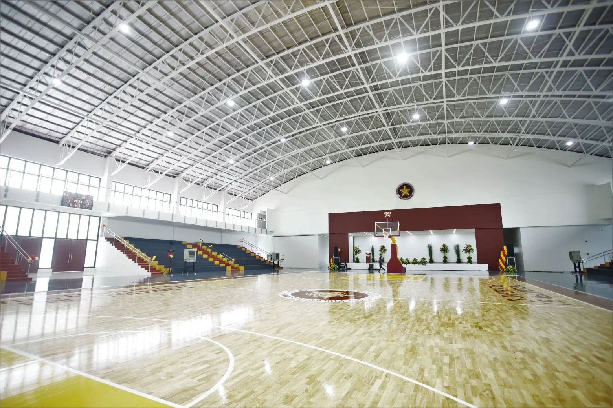

Sports facility can now accommodate up to 2000 people. Aside from four multipurpose rooms, several offices on the second floor have been set up for use. Indoor badminton court, improved bleachers, larger stage, shower room for athletes, storage rooms for various sports equipment, FIBA standard basketball court flooring system, weightlifting room, FIBA standard basketball goal system, wireless scoring systems, and access for our community members with disabilities were among the additional features. Other than sports activities, forums and meeting are also held here. Meetings and special events where a large number of people are attending.